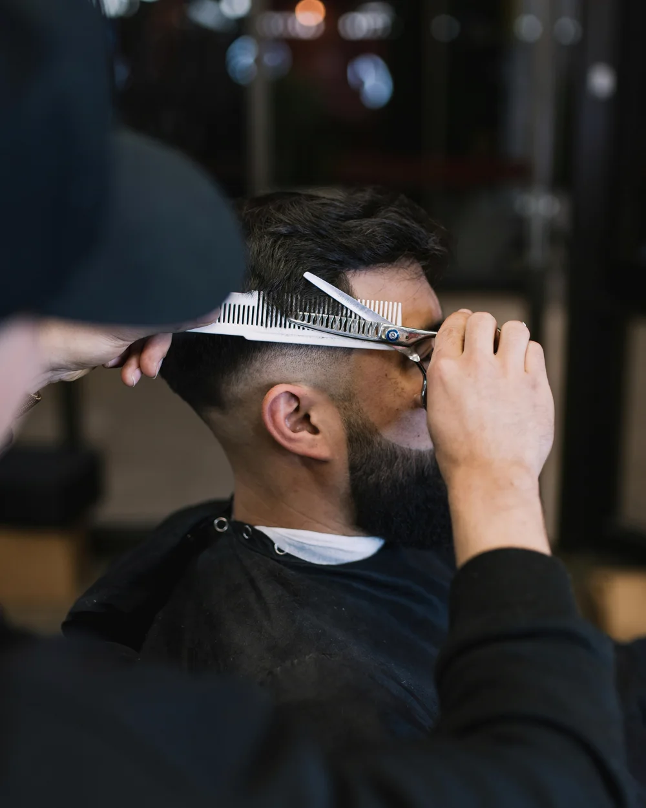
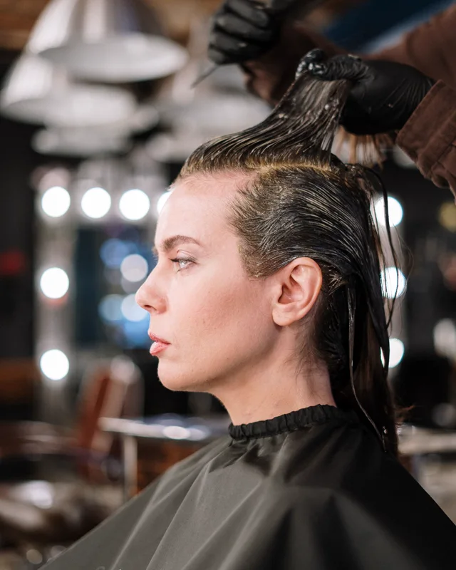
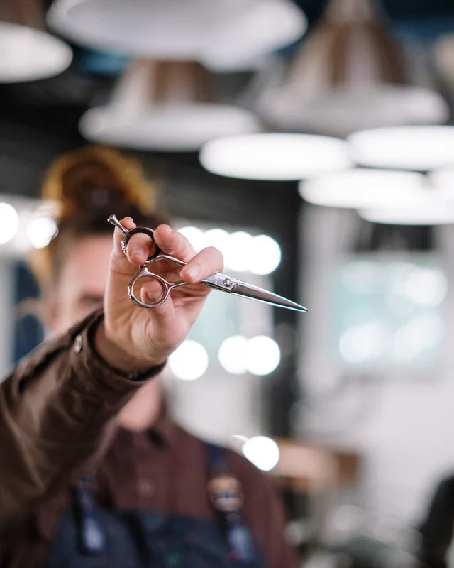
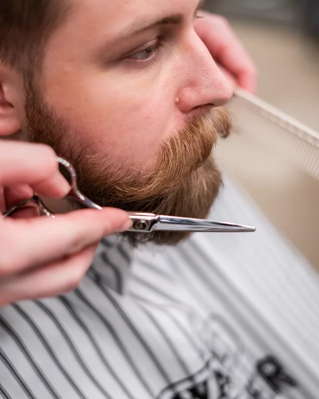
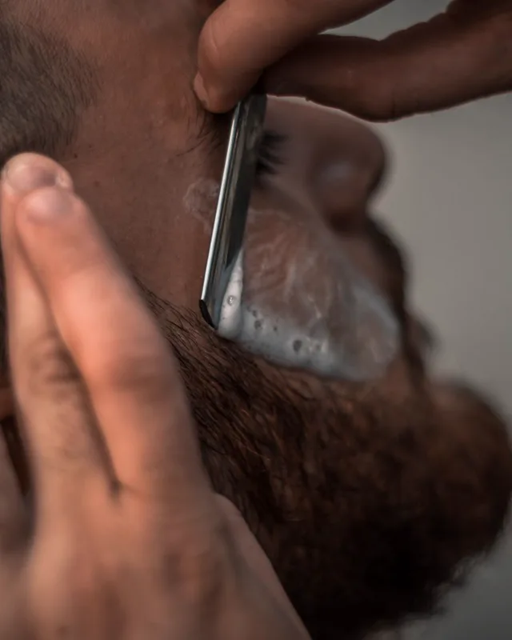
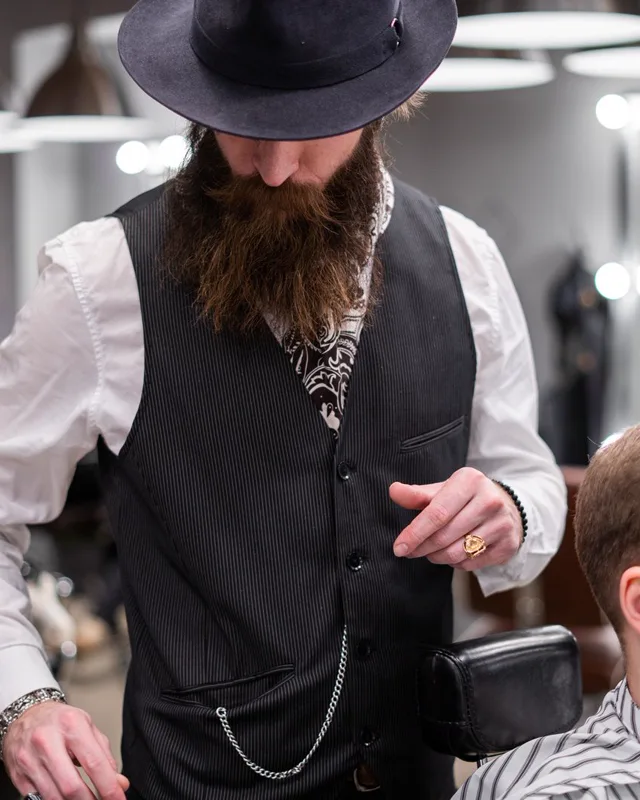
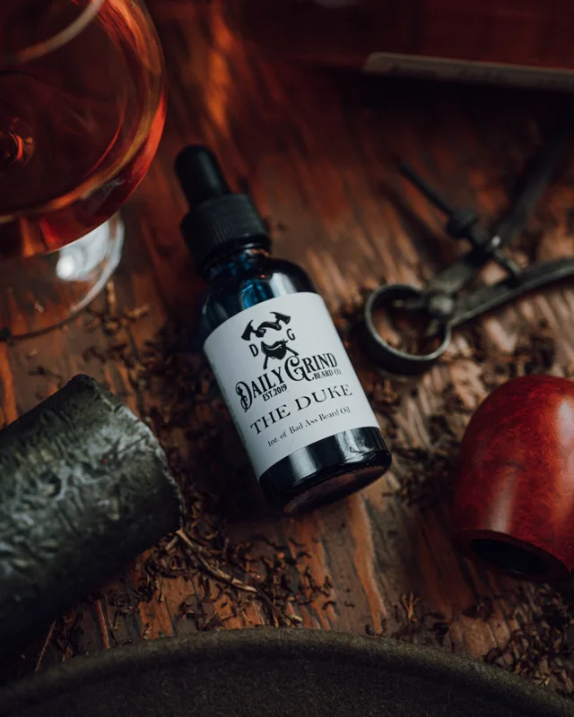
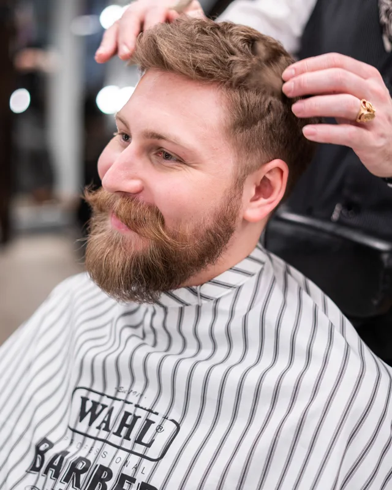
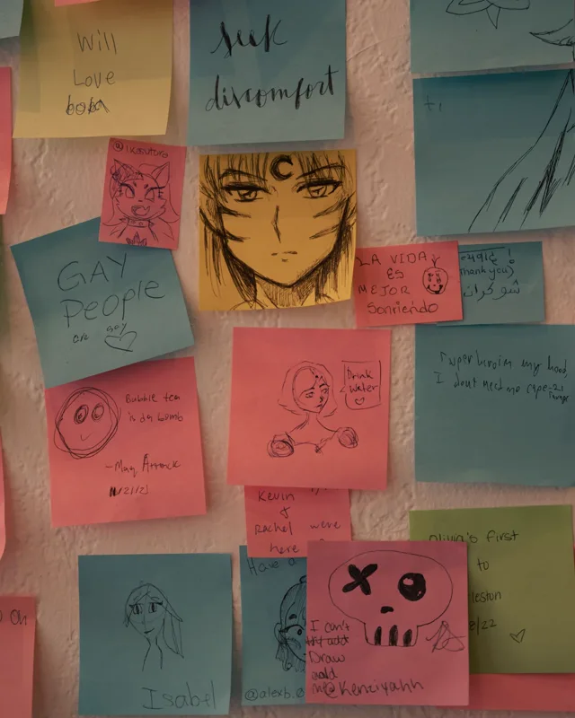

Precyzja geometrii
Czyste linie karku, dopracowane cieniowanie i kontury wykonane z chirurgiczną dokładnością.
Męska estetyka i rzemiosło
Dopracowane strzyżenie męskie, profesjonalna pielęgnacja brody i klasyczne rzemiosło w nowoczesnym, spokojnym wydaniu.

O nas
BLACKLINE BARBER to przestrzeń dla mężczyzn oczekujących bezkompromisowej jakości. Łączymy surową estetykę ze spokojem i pełnym skupieniem na Twoim wizerunku. Tutaj rzemiosło fryzjerskie wraca do swoich najlepszych korzeni.
Unikamy szablonowych rozwiązań. Każde strzyżenie i modelowanie zarostu dobieramy indywidualnie — do rysów twarzy, rodzaju włosa i Twojego stylu. Pracujemy na sprawdzonych technikach barberskich i selektywnych kosmetykach męskich.
Dopracowana fryzura i czysta linia brody to kwestia milimetrów. Dbamy o każdy detal: od wstępnej konsultacji, przez precyzyjne cięcie brzytwą, po finalną stylizację. Zapewniamy formę, na której możesz polegać.
Czyste linie karku, dopracowane cieniowanie i kontury wykonane z chirurgiczną dokładnością.
Kameralna atmosfera bez pośpiechu, głośnej muzyki i przypadkowego chaosu.
Profesjonalne olejki, pomady i toniki dobrane pod kątem zdrowia włosów i skóry.
Oferta
Przejrzyste zasady i pełna dbałość o formę. Wybierz usługę dopasowaną do Twoich potrzeb.
Konsultacja wizerunkowa, precyzyjne mycie, strzyżenie nożyczkami oraz maszynką dopasowane do kształtu głowy, czyszczenie karku brzytwą i stylizacja końcowa.
Modelowanie kształtu brody, wyznaczanie ostrych konturów, strzyżenie wąsów, pielęgnacja gorącym ręcznikiem, odżywczy olejek i balsam ochronny.
Kompletny pakiet męskiej pielęgnacji. Pełne strzyżenie fryzury oraz kompleksowe trymowanie i konturowanie brody z rytuałem pielęgnacyjnym w trakcie jednej wizyty.
Szybkie, równe cięcie jednej długości lub precyzyjny fade maszynką z dopracowaniem linii konturowych brzytwą i pielęgnacyjnym myciem głowy.
* Ceny oraz czasy trwania usług mają charakter orientacyjny i demonstracyjny. Ostateczny cennik zostanie ustalony dla konkretnego lokalu.
Portfolio
Zobacz naszą przestrzeń, dbałość o warsztat fryzjerski oraz klimat codziennej pracy.








* Prezentowane fotografie mają charakter poglądowy i służą celom demonstracyjnym projektu.
Lokalizacja i kontakt
Masz pytania dotyczące usług lub terminów? Skontaktuj się z nami bezpośrednio lub zarezerwuj wizytę online.
[Ulica i numer lokalu]
[Kod pocztowy, Miasto — np. Warszawa / Kraków]
(Lokalizacja demonstracyjna)
(Godziny przykładowe)
Telefon: [+48 XXX XXX XXX]
E-mail: [kontakt@blacklinebarber.pl]
(Dane poglądowe)
Informacja demonstracyjna: Powyższe dane kontaktowe oraz lokalizacja są elementami przykładowymi szablonu. W docelowej witrynie zostaną zastąpione rzeczywistymi danymi salonu.
Zadbaj o swój wizerunek z pomocą profesjonalistów. Zarezerwuj dogodny termin i przekonaj się, czym jest bezkompromisowa precyzja.
Projekt demonstracyjny: System bezpośredniej rezerwacji wizyt online (Booksy) jest nieaktywny w trybie demonstracyjnym. W wersji produkcyjnej ten przycisk przekierowuje bezpośrednio do zweryfikowanego profilu salonu w serwisie Booksy, umożliwiając natychmiastowy wybór terminu i barbera.